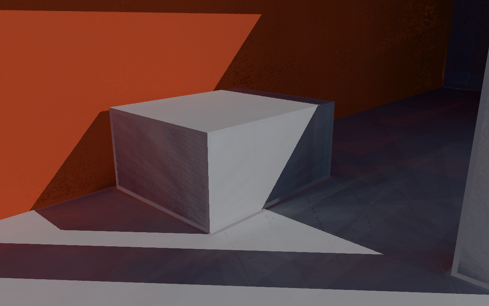
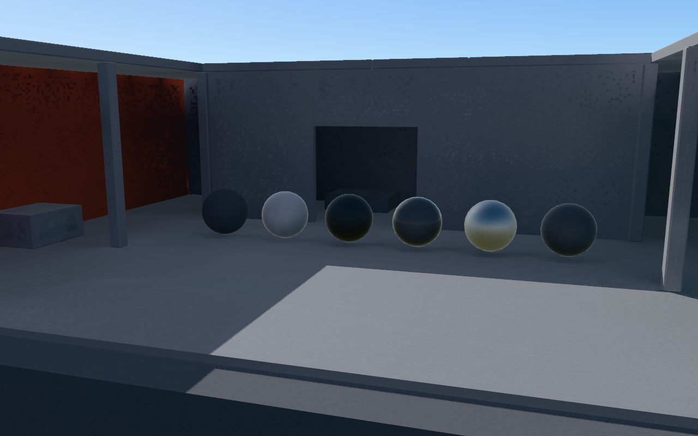
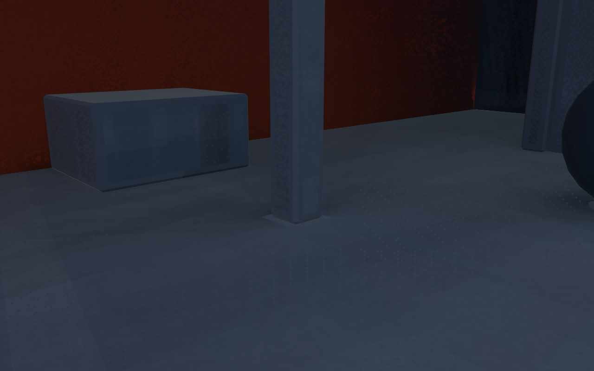

同条件画面
邻域世界几何保护会在遮挡边界保守回退 DDGI。raw FG、filtered FG、权重和 E_used 可在页面及 images 目录中检查；raw 数据没有被过滤或反馈到 solver。
默认 DDGI。可选 FG 以同 revision 的 E_(k−1) 为深层光源，从接收表面求世界 BVH 第一命中。原质量保持 2m / 128 probe rays / 3 bounces；无历史，不读取屏幕颜色。
Earth GI Lab · DDGI · 半分辨率 32r FG · 全分辨率 ROI · Raw FG · 完整说明
读取真实报告…
高采样查询与低采样生产档分别判断。failed 保留并返回失败退出码；不能用代码回归替代画质验收。邻域世界几何保护会在遮挡边界保守回退 DDGI。raw FG、filtered FG、权重和 E_used 可在页面及 images 目录中检查；raw 数据没有被过滤或反馈到 solver。
A：当前 DDGI；B：相同探针 E、精确 segment visibility；C：1024r × 3 固定种子 FG；D：8192 路径、不使用 DDGI/SurfaceCache 的独立参考。三种深度和原/旋转错位场景均保留全部49点、历史13个计分索引及每点SE。
A/B/C/D JSON · 生产接收点与16/32/64/256r原始结果 · 高采样关卡 · 16r关卡 · 32r关卡

改灯期间不匹配的输入回退 DDGI；相机变化不重载静态 BVH。


展示预设使用原有 PBR/IBL/MSAA4 设置，单独计成本；不作为算法同条件对照。